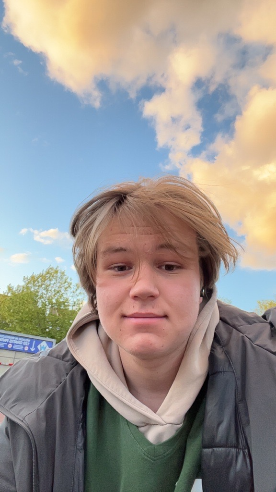
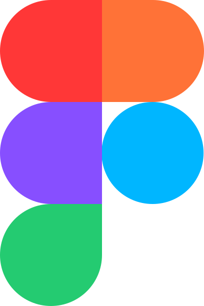
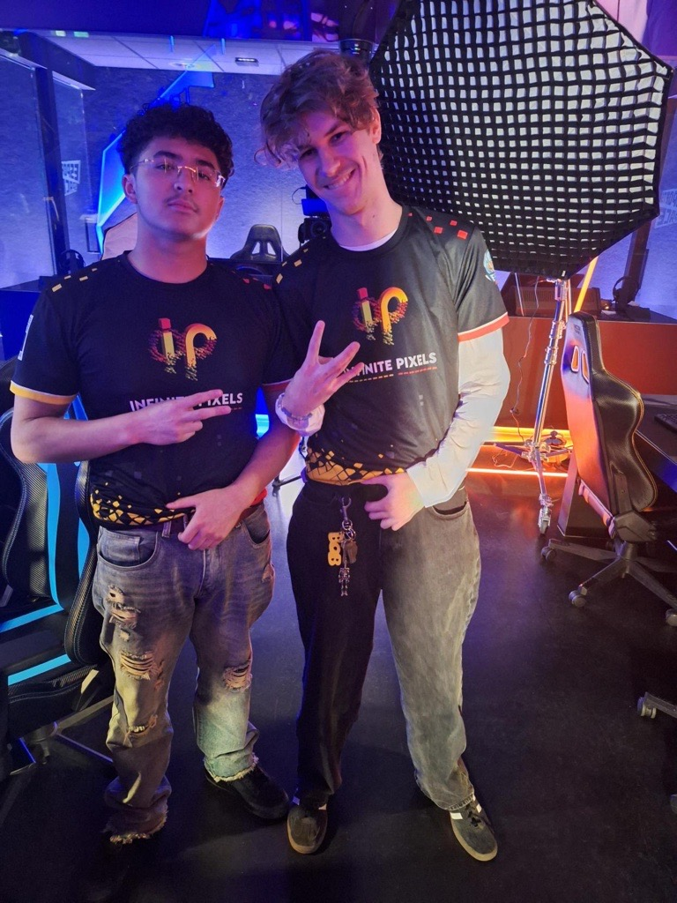
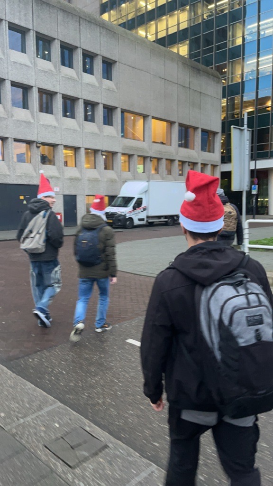
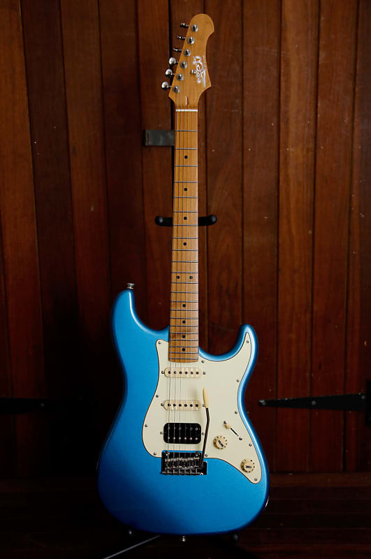
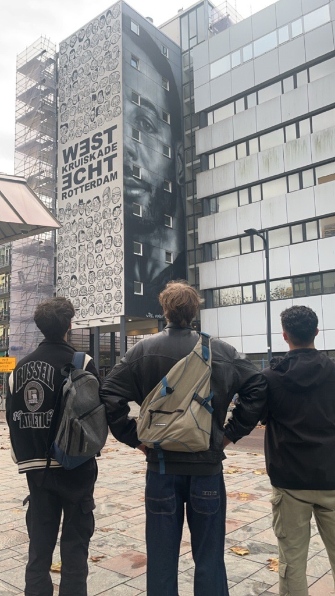

A b o u t m e

w o l f s
Hi, I'm Joran,
I am a software development student at Grafisch Lyceum Rotterdam, specializing in Web Development and UI/UX Design.
I grew up around computers and game consoles, developing a fascination with how technology creates engaging experiences. The immersive quality of stepping into digital worlds inspired me to initially pursue software development, where I learned to appreciate structured, intentional spaces.
While my journey began in software development, I eventually gravitated toward UI/UX design and coding, giving me a solid foundation to adapt my understanding of form and function to the digital space.
I'd welcome the opportunity to connect and explore your ideas, and how we can get them to come alive.
Get in touch.M y s k i l l s
 Cursor
Cursor

Figma Php
Php
My Expertise
I combine creativity and technical skills in AI and web development. With experience in AI tools like ChatGPT, I solve problems efficiently. In web design, I use Figma for intuitive interfaces and develop them with HTML, CSS, and JavaScript. On the back-end, I work with PHP and PHPStorm, delivering seamless and user-friendly solutions. Additionally, I use Cursor IDE, a modern development environment with AI-powered features, to boost productivity and streamline my coding workflow.
My hobbies
What I Love To Do
In my free time, I have a mix of hobbies that keep me both active and relaxed. I'm part of an amazing esports team called Infentent Pixels, where we compete in Counter-Strike. Gaming with my team is not just about winning it's about the camaraderie and passion we share for the game.
When I'm not gaming, I love spending time with my friends outdoors. Whether it's exploring street art, walking around in Christmas hats during the holidays, or just having a good laugh together, it's always a blast.
Another hobby I'm passionate about is playing guitar on my Jet 400. Music helps me unwind and express myself creatively. And of course, I always make time to relax and enjoy a good show. My favorite is Adventure Time, and I'm especially drawn to Marceline because of her tragic yet compelling backstory.
Whether I'm gaming, making music, or watching my favorite series, I always make sure to enjoy every moment!



